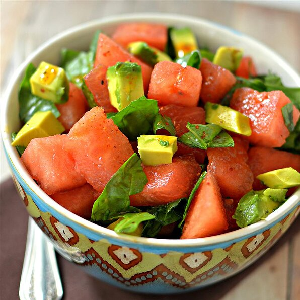

Avocado Watermelon Salad Recipe

This is a very healthy, yet delightfully different salad.
A flavorful addition could be small slices of red onion.
It has a very high water content and provides nutrients like lycopene, citrulline, and vitamins A and C.
Studies suggest that this sweet, red melon may even boost heart health, reduce muscle soreness, and decrease inflammation, though more research is needed.
Ingredients
-
4 cups cubed watermelon
-
4 cups fresh baby spinach, torn
-
2 large avocados - peeled, pitted, and diced
-
1/4 cup walnut oil
Steps
-
Combine watermelon, spinach, and avocados together in a bowl.
-
Whisk walnut oil, olive oil, lime juice, and paprika together in a bowl; pour over watermelon mixture.
Toss to coat.